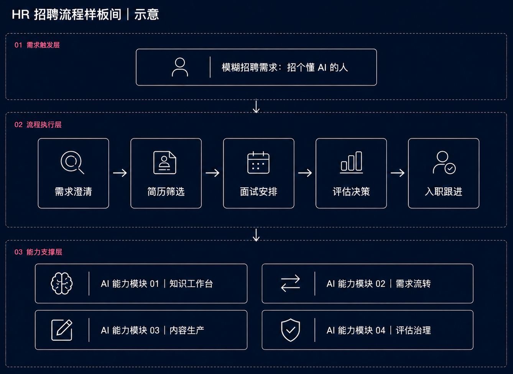

综合场景入口
AI 综合场景样板间
AI 如何进入 HR 招聘流程
从“招个懂 AI 的人”这类模糊需求开始，把前面四个项目重新装配进一个 HR 招聘流程。
样板间构建：
01项目 1：信息承重墙
可信上下文｜输入层｜招聘判断的信息基础
JD / 职级 / 面评 / 历史记录
02项目 2：决策动线
业务信号流转｜流程层｜招聘流程中的决策流转路径
需求 → 澄清 → 筛选 → 面试 → 决策
03项目 3：决策装配单元
结构化输出｜输出层｜结构化招聘决策结果
JD / 面试题 / 候选包
04项目 4：判断闸门
方法论底座｜控制层｜AI 在招聘流程中的介入控制规则
场景 / 边界 / 闸门
